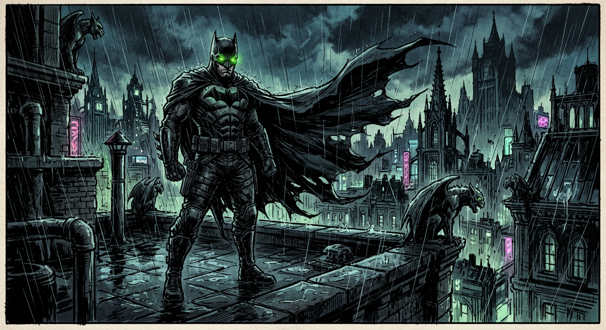
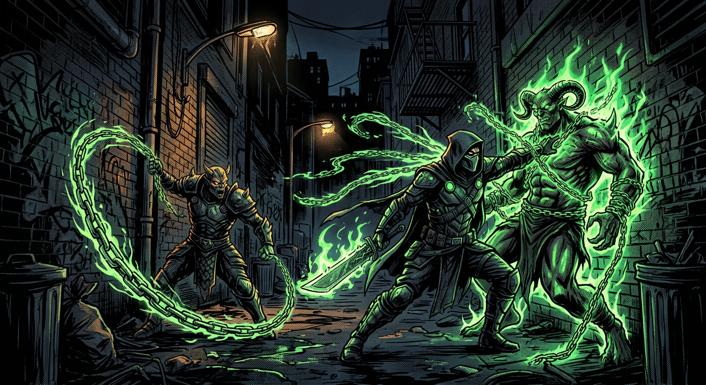
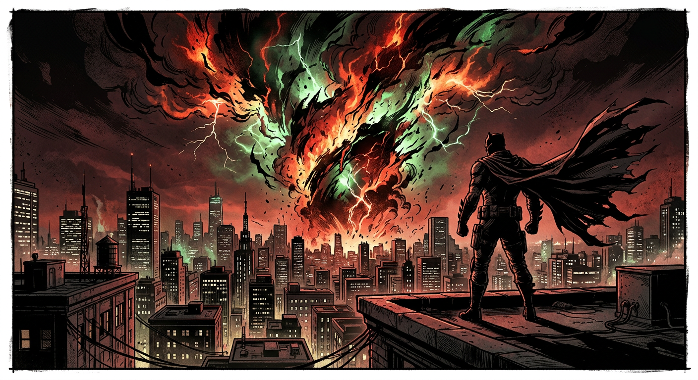
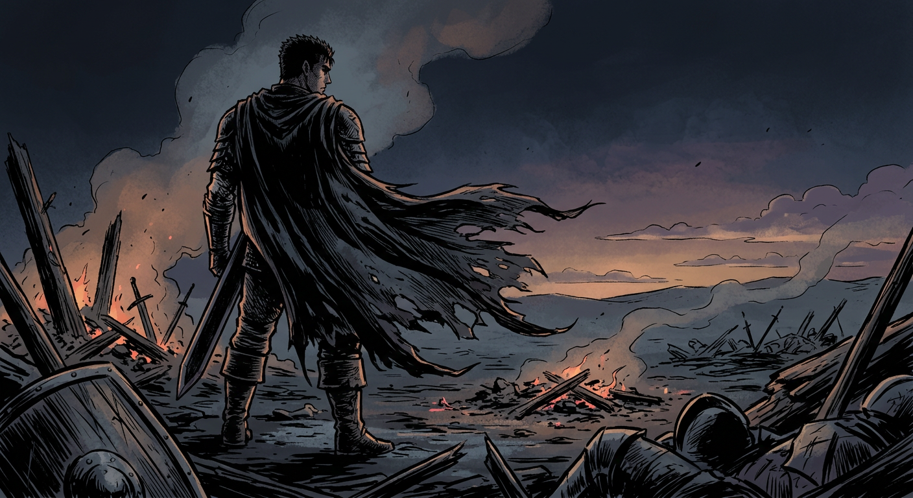

KRAKK
Panel I — The Return. Rain needles the skyline as the oath-bound warrior steps back into a city that forgot his name, but not his sins.
Mini storyboard · A midnight pact, a city on the edge, and one antihero between worlds.



